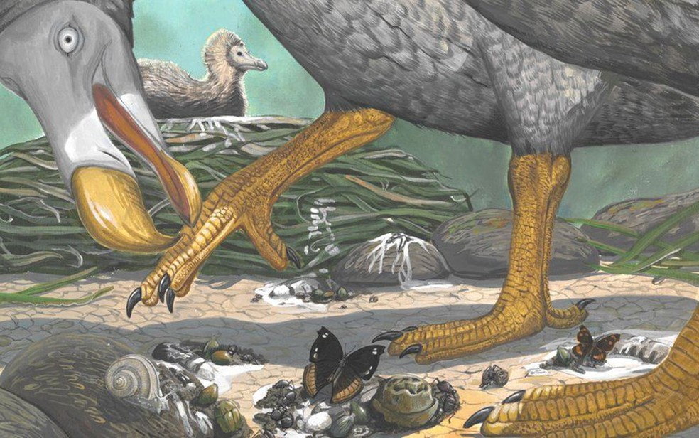
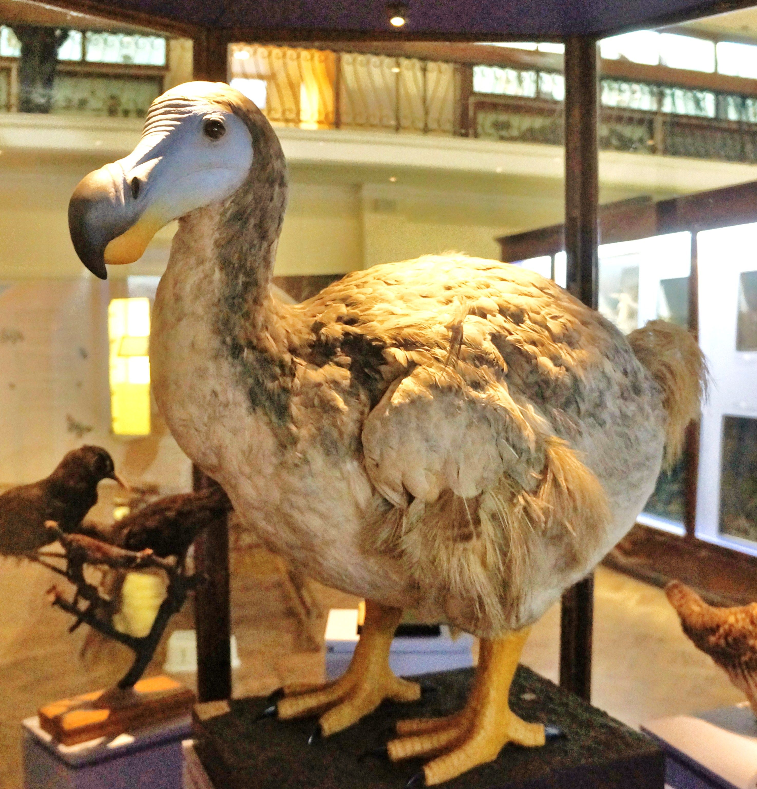
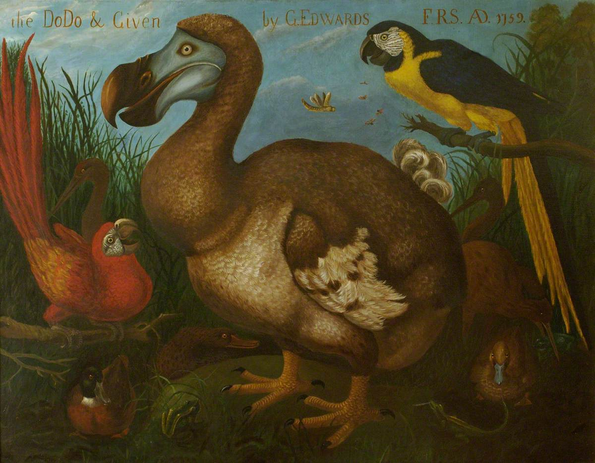

Dodo (Raphus cucullatus)
Dados Rápidos:
-
Ano de extinção: 1662
-
Motivo de extinção: Perda de habitat e competição com espécies introduzidas
-
Habitat: Endêmico na ilha de Maurícia, no Oceano Índico
-
Tamanho: 1 metro
-
Peso: 10-17 quilos


